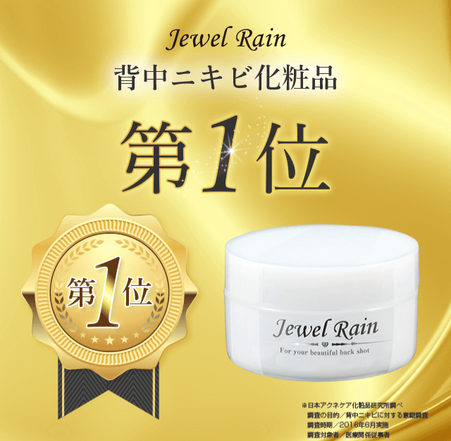
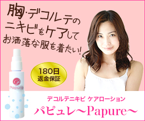
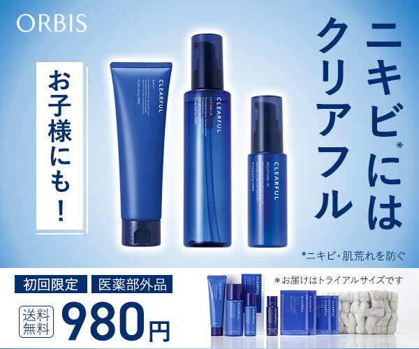
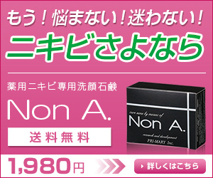
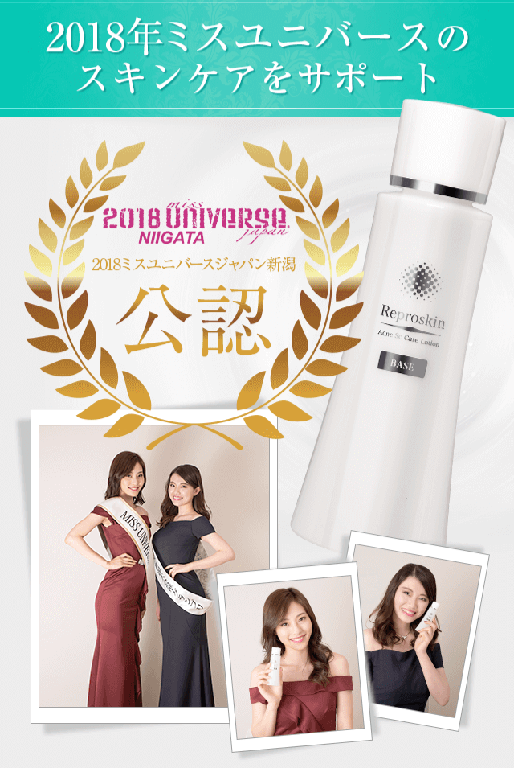

「ドレスの試着で背中の汚さに絶望した」
「忙しくて口周りの吹き出物が止まらない」strong>
栄養士として多くの女性を見てきましたが、挙式1〜2ヶ月前はストレスと準備疲れで人生で一番肌が荒れやすい時期でもあります。
このページでは、「栄養士視点のインナーケア」と、「即効性を重視したアウターケア（化粧品）」の両面から、当日までに間に合わせる最短ルートを解説します。
1. 発生場所でわかる「原因」
背中・デコルテのニキビ
ドレスで最も露出する部分。原因は「シャンプーの洗い残し」と「交感神経の緊張による発汗」が多数。
顔より皮膚が厚く治りにくいため、普通の化粧水では浸透しません。「浸透力の高いジェル」が必須です。
口元・顎（あご）のニキビ
ここは「胃腸の鏡」です。準備のストレスや暴飲暴食がダイレクトに出ます。
外からのケアだけでなく、消化に良い食事とビタミンB群の摂取が一番の近道です。
二の腕のザラザラ
ニキビではなく「毛孔性苔癬（もうこうせいたいせん）」の可能性も。乾燥で悪化するため、スクラブは控えめにし、徹底的な保湿が必要です。
2. 悩みの部位に分けた厳選ケア
「何を使えばいいかわからない」という方へ。
あなたの今の悩みに合わせて、最適なアイテムを分類しました。





肌が不安定なときに使うもの
荒れている時期は、成分の種類が少ないものを選んでください。何が入っているかより、何が入っていないかで選ぶ時期です。刺激になりやすい成分を外した設計のブランドがあります。

敏感肌のときの考え方に詳しくまとめています。
さらに詳しく